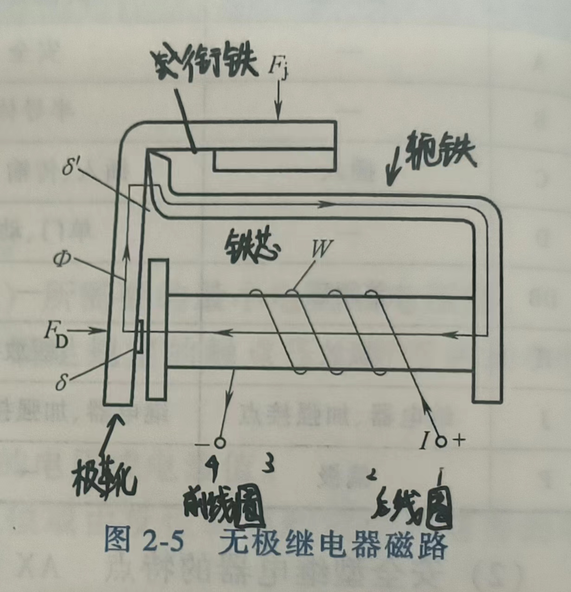

轨道交通信号基础知识点复习期中
-
普通单开道岔组成：转辙部分、连接部分、辙叉部分
- 转辙部分：尖轨，基本轨，连接零件，转辙机械
- 连接部分：导轨，基本轨
- 辙叉部分：叉心、翼轨、护轮轨
-
列车自动运行控制系统（ATC）包括哪三个子系统：
- 列车自动防护系统（ATP）
- 列车自动驾驶系统（ATO）
- 列车自动监控系统（ATS）
-
轨道电路两个主要作用？按分割方式：车辆段内、正线分别采用什么类型轨道电路？
- 检测列车是否占用线路
- 传输ATP信息（传递行车信息） 车辆段：50Hz相敏轨道电路（公频交流轨道电路） 正线：音频轨道电路
-
按照信息是否可变，应答器应分哪两类？
- 固定应答器
- 可变应答器
-
联锁的定义
- 联锁（Interlocking）是指一套安全保障系统，用来控制铁路信号、道岔和轨道电路之间的逻辑关系，以防止列车冲突和事故的发生。联锁系统确保只有在不会导致列车相撞或发生危险情况的前提下，信号才会显示允许行车的指示，并且道岔才能被转换到适当的位置，允许列车安全通过。
- 信号、道岔、进路之间相互制约的关系，称为联锁关系，简称联锁，实现它们之间联锁关系的设备称为联锁设备。
-
分别从线路走向、客流量及列车编组之间比较地铁与轻轨之间的区别？
-
线路走向:
-
客流量:
-
列车编组:
-
-
画出普通右开道岔，并标明各部分组成？

-
若继电器的型号是JPXC-H270，请说明型号中各字母和数字表示的意义？并说明该类型继电器的结构和性能特点？
JPXC-H270型偏极继电器中，J代表继电器，P代表极化，X代表信号，C代表插入式，H代表缓放，270代表序号。该类型继电器主要用于交流电路中，通过内部的半波或全波整流电路将交流电变为直流电而动作，以避免在AX系列继电器中采用结构形式完全不同的交流继电器，提高产品的系列化、通用化程度。
偏极继电器的接点系统的结构与无极继电器相同，零部件全部通用，只是接点的编号有区别。其结构包括磁路系统、转换传动系统和接点系统。磁路系统主要由线圈、铁芯、衔铁和轭铁组成，主要作用是产生电磁吸力；转换传动系统主要由衔铁和拉杆组成，主要作用是把电磁吸力转换成拉杆的机械运动，断开或闭合接点；接点系统主要由接点片、接点组组成，主要作用是利用接点的闭合和断开来控制外部电路。
-
继电器的组成结构图名称？写出安全型继电器吸起落下的原理？

安全型继电器主要由磁路系统、转换传动系统和接点系统组成。其吸气工作原理是在线圈两端加上一定的电压，线圈中就会流过一定的电流，从而产生电磁效应，衔铁就会在电磁力吸引的作用下克服返回弹簧的拉力吸向铁芯，从而带动衔铁的动触点与静触点吸合。其落下工作原理是当线圈断电后，电磁的吸力也随之消失，衔铁就会在弹簧的反作用力返回原来的位置，使动触点与原来的静触点释放，从而达到在电路中的导通、切断的目的。
-
轨道电路的三种工作状态以及线路空闲、占用的工作原理？
- 调整状态
- 分路状态
- 断轨状态
- 线路空闲：电流从轨道电路电源正极--钢轨--轨道继电器--另一根钢轨--电源负极。继电器吸起——绿灯
- 线路占用：电流从轨道电路电源正极--钢轨--车轮--另一根钢轨--电源负极。继电器落下——红灯
-
1435mm标准轨距
-
继电器 信号机关闭 XJ 落下 道岔开通 DJ 落下 轨道电路空闲GJ 吸起